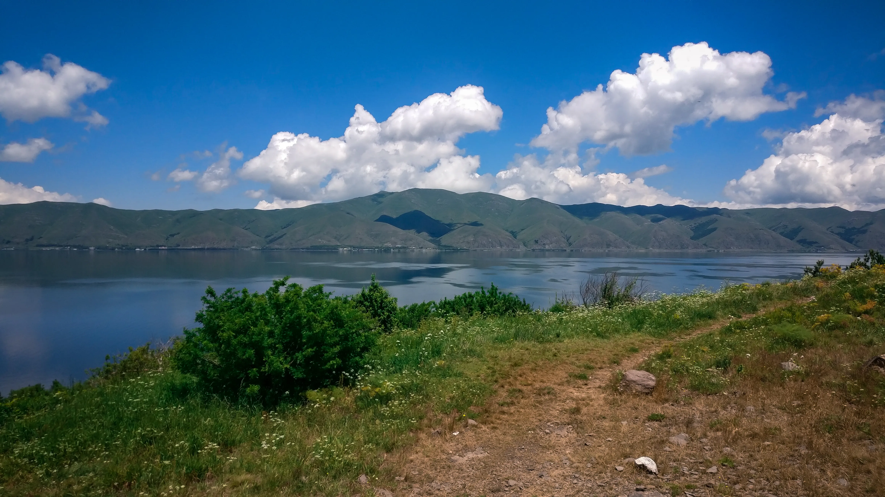
ՀՀ Գեղարքունիքի մարզը բարձր լեռնային գոգավորություն է, որի միջլեռնային իջվածքի հատակը զբաղեցնում է Սևանա լիճը։ Այն շրջապատված է միջին բարձրության և բարձր ծալքաբեկորավոր լեռներով։ Մարզը գտնվում է ծովի մակերևույթից 1325-3597 մ բարձրությունների վրա։ Արևմուտքից տարածքը եզերվում է Գեղամա և Փամբակի, հարավից՝ Վարդենիսի, արևելքից՝ Սևանի, իսկ հյուսիս-արևելքից՝ Միափորի լեռնաշղթաներով։


Գեղարքունիքը դեպի Արարատյան դաշտավայր բնական ելք ունի միայն հյուսիս-արևմուտքից՝ Հրազդան գետի կիրճով։ Հանրապետության մյուս մարզերի հետ այն կապված է հիմնականում լեռնանցքներով։ Մարզում գերակշռում են լեռնային լանդշաֆտները և հրաբխային ռելիեֆը։ Գեղամա և Վարդենիսի լեռներում պահպանվել են տասնյակ հրաբխային կոներ։
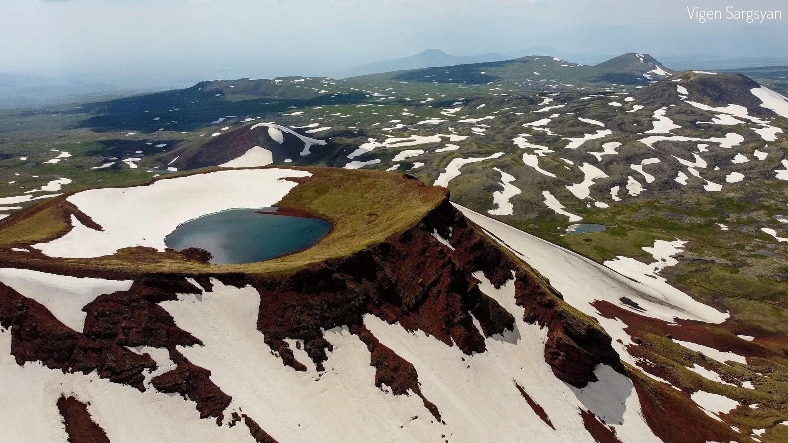
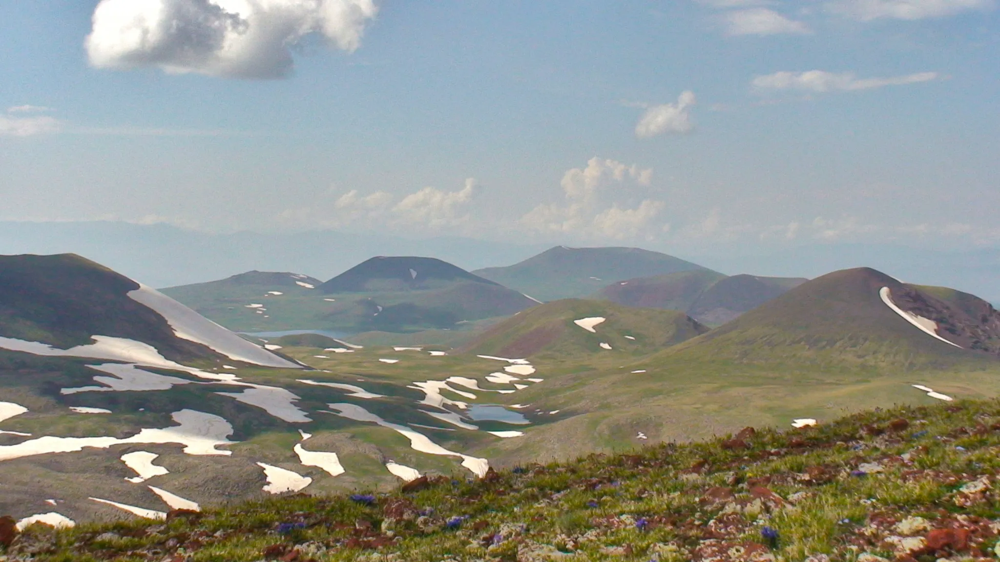
Ուշագրավ են հատկապես Աժդահակ և Արմաղան հրաբուխները, որոնց խառնարաններում գոյացել են գեղատեսիլ լեռնային լճակներ։ Այդ հրաբխային ծագման լճերը կրում են նույն անունները՝ Աժդահակ և Արմաղան։ Տարածաշրջանը գտնվում է մինչև 9 բալ հնարավոր երկրաշարժերի գոտում։
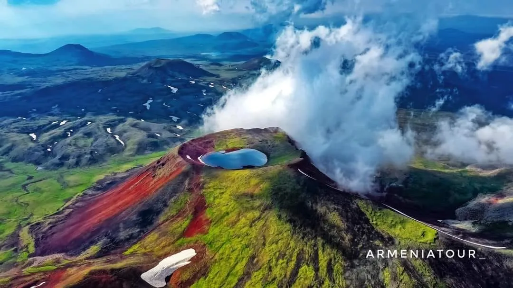
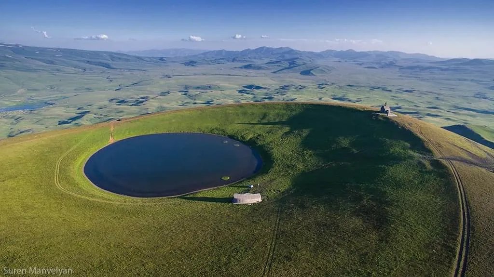
Գեղարքունիքի ամենաբարձր գագաթներն են՝ Սպիտակասարը (3555 մ), Վարդենիսը (3522 մ), Գեղասարը (3443 մ), իսկ մարզի ամենաբարձր լեռնագագաթը Աժդահակն է՝ ծովի մակերևույթից 3598 մ բարձրությամբ։ 2500-3000 մ բարձրություն ունեցող լեռնաշղթաները կազմում են հսկայական բնական եռանկյունի։


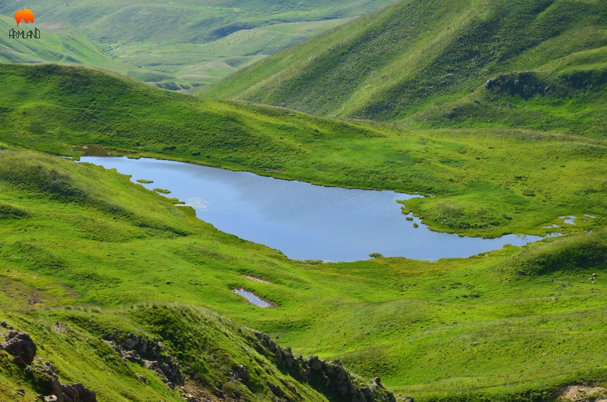
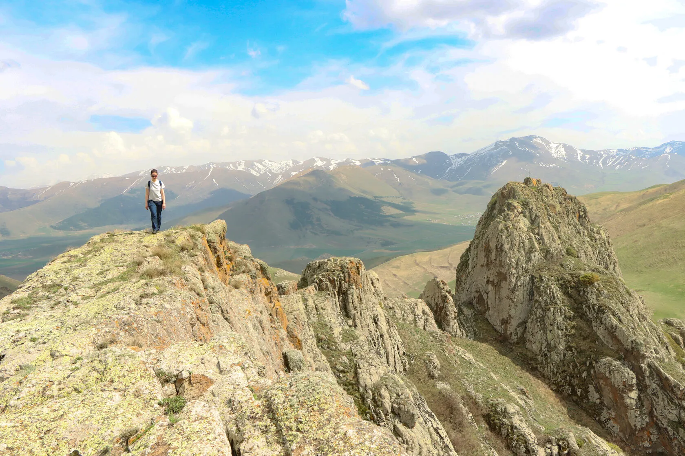
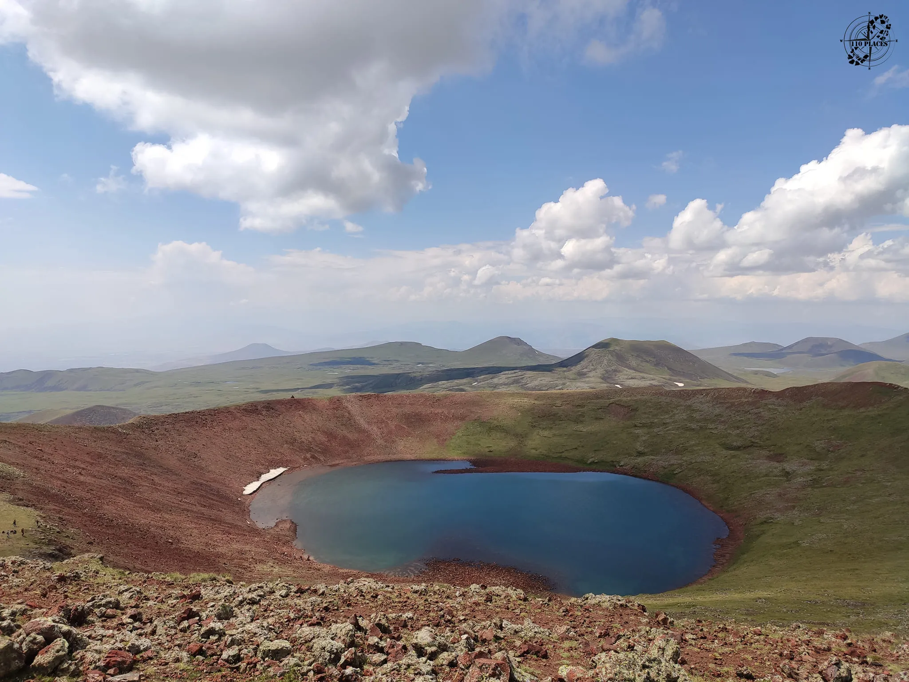
Մարզի տարածքը հարուստ է դոլոմիտի, բազալտի, հրաբխային տուֆի, ավազի, ինչպես նաև ոսկու և այլ օգտակար հանածոների պաշարներով։ Գեղամա և Վարդենիսի լեռներում տարածված են շինարարական քարեր՝ տուֆ, բազալտ, անդեզիտ-բազալտ, կվարցիտ, իսկ Սևանի լեռնաշղթայի շրջանում հանդիպում են քրոմի, սնդիկի, ոսկու և հրակայուն ապարների հանքավայրեր։ Մասրայի հարթավայրերում առկա են նաև բուժական տորֆի նստվածքներ։
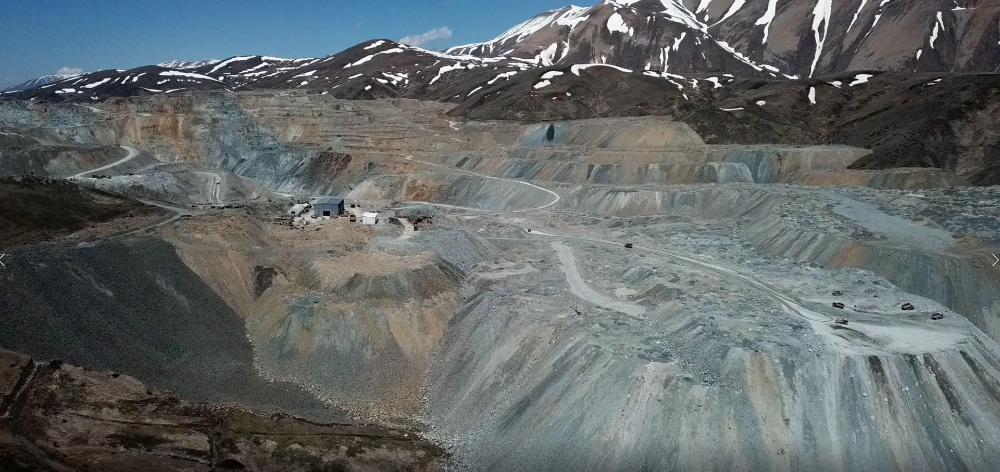
Գեղարքունիքը հարուստ է բնության տեսարժան վայրերով։ Առավել հայտնի են՝ Սևանա լիճը, Սևանի և Արտանիշի թերակղզիները, Արգիճիի սարահարթը, Մասրիկի հարթավայրը, Արեգունու և Արևելյան Սևանի լեռները, Գռիձորը, Մթնաձորը, ինչպես նաև Աժդահակի, Արմաղանի և Վարդենիսի գագաթներին գոյացած խառնարանային լճակները։ Տարածաշրջանում կան բազմաթիվ կիրճեր, ձորեր և ժայռախմբեր, որոնք մեծ հետաքրքրություն են ներկայացնում լեռնագնացության, արկածային և սարվոր տուրիզմի համար։ Այսպես, Գավառագետի վտակ Գռիձորի հովիտը եզակի բնական հրաշք է, և հիանալի վայր՝ բացահայտելու Հայաստանի գեղատեսիլ բնությունը։ Այն իրենից ներկայացնում է 2 00 մ խորությամբ, 300 մ լայնությամբ և 1 կմ երկարությամբ սառցադաշտային տրոգ, որի վերջնամասում գետի ջրերը 3մ բարձրությունից գահավիժելով ցած առաջացնում ենլ փոքրիկ ջրվեժ։ Ի դեպ, նույն Գռիձորում է գտնվում աշխարհի ամենասառնորակ ջուր ունեցող աղբյուրներց մեկը՝ +4˚C:
Սևանա լիճ և ջրագրություն
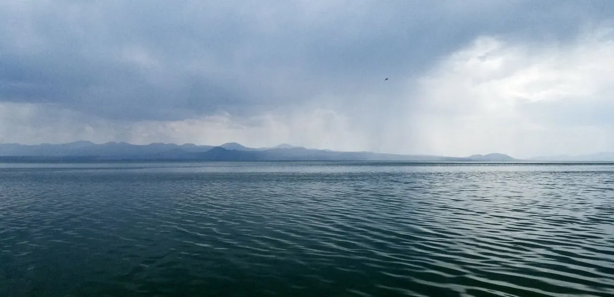
Սևանա լիճ և ջրագրություն Գեղարքունիքի բնաշխարհի գլխավոր զարդը Սևանա լիճն է՝ Հարավային Կովկասի քաղցրահամ ջրերի ամենամեծ ավազանը։ Այն առանձնանում է իր յուրահատուկ բարձր լեռնային էկոհամակարգով և համարվում է աշխարհի ամենախոշոր բարձրադիր լճերից մեկը։
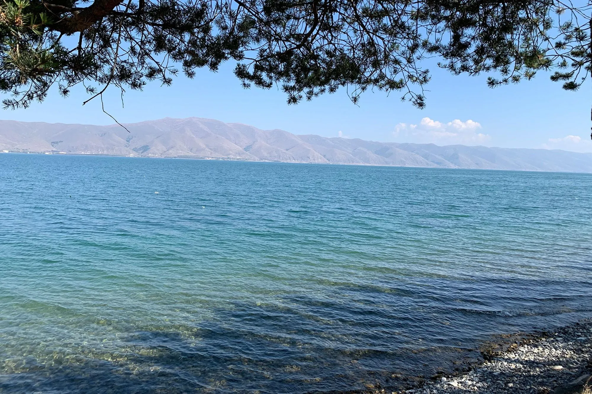
Մարզի տարածքը գրեթե ամբողջությամբ մտնում է Սևանա լճի ջրահավաք ավազանի մեջ։ Լիճը զբաղեցնում է շուրջ 1278 քառ. կմ տարածք և գտնվում է ծովի մակերևույթից 1916 մ բարձրության վրա։ Նրա մակարդակը ավելի քան 1 կմ-ով բարձր է Արարատյան դաշտից։ Լճի ավազանի ընդհանուր մակերեսը կազմում է շուրջ 5000 քառ. կմ, իսկ ջրի ծավալը՝ 35.8 մլրդ խ/մ։

Սևանը մեծ ազդեցություն ունի մարզի բնության, տնտեսության և կլիմայի վրա։ Լիճը սնում են 28 գետեր և գետակներ։ Սևանի ջրահավաք ավազանը հարուստ է աղբյուրներով և արտեզյան ջրերով, որոնք օգտագործվում են ոռոգման և ջրամատակարարման նպատակներով։ Հատկապես աղբյուրներով հարուստ է արևմտյան ափը։ Հանքային աղբյուրները մեծացնում են նաև տարածաշրջանի ռեկրեացիոն նշանակությունը։
Մարզի ամենաերկար գետերն են՝ Արգիճին (51 կմ), Գավառագետը (47 կմ) և Մասրիկը (45 կմ)։ Ջրագրական համակարգի կարևոր մաս են կազմում նաև Աժդահակի և Արմաղանի խառնարանային լճերը։

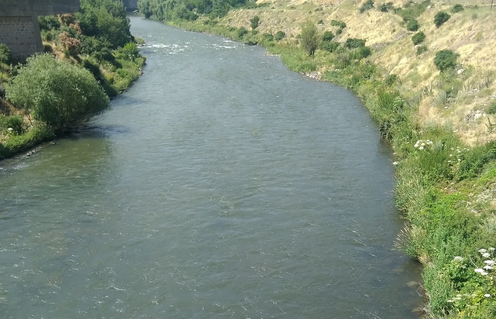
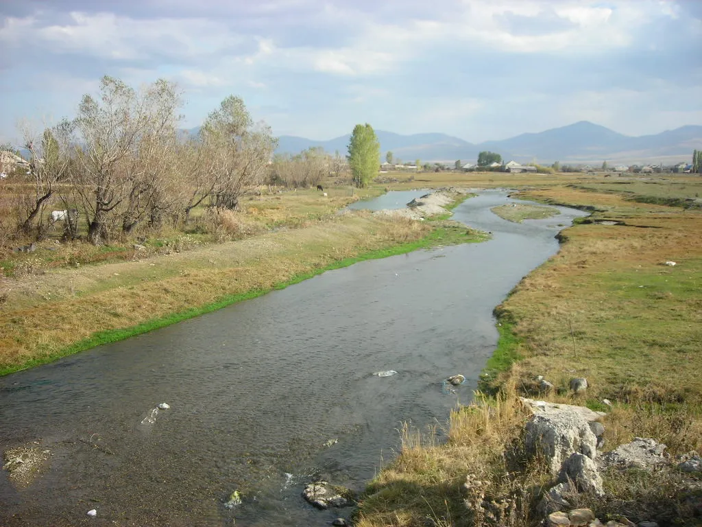
1981 թվականից Սևանի հիմնական ջրային համալրումը կատարվում է Արփա-Սևան 48 կմ երկարությամբ թունելային ջրատարի միջոցով։ Նորատուսի և Արտանիշի հրվանդանների միջև ընկած նեղուցով Սևանը բաժանվում է երկու մասի՝ Մեծ և Փոքր Սևանի։ Փոքր Սևանը լճի առավել խորը հատվածն է, որտեղ առավելագույն խորությունը հասնում է 81 մ-ի:
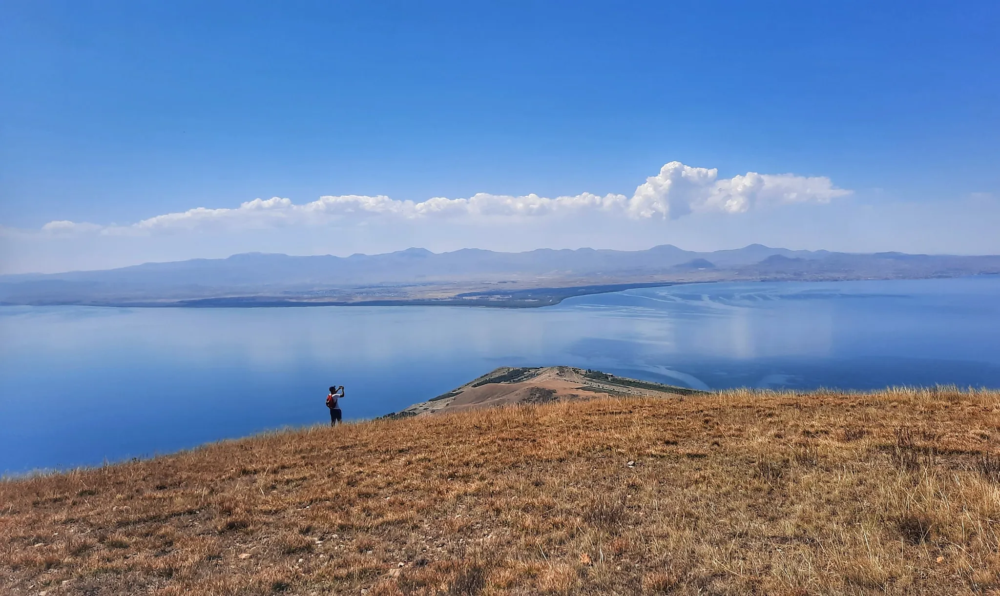
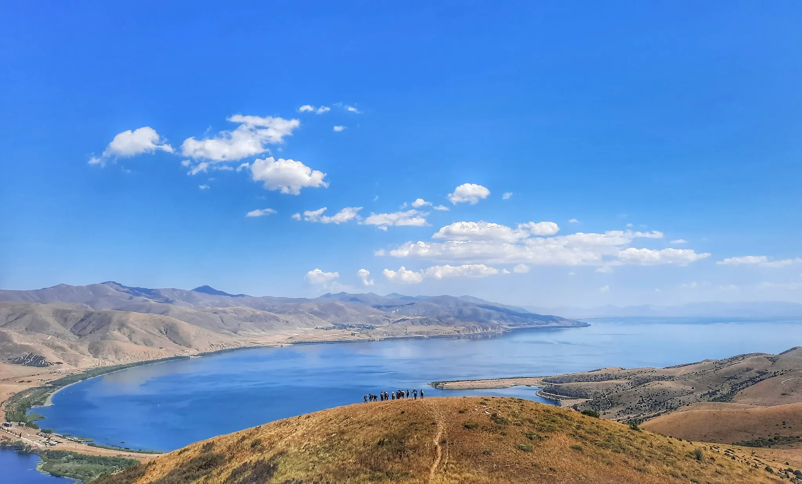
Սևանի հյուսիս-արևմտյան հատվածում վեր է խոյանում Սևանի թերակղզին՝ ուղղաձիգ ափերով հսկա քարաժայռ։ Անցյալում այն կղզի էր, սակայն լճի մակարդակի իջեցումից հետո վերածվել է թերակղզու։ Դեռևս IX դարում կղզու վրա կառուցվել է միջնադարյան հայկական ճարտարապետության նշանավոր հուշարձաններից մեկը՝ Սևանավանքը։ Լճի բնական լանդշաֆտի հետ ներդաշնակորեն միաձուլվում են Հայրավանքի և Սևանավանքի համալիրները։
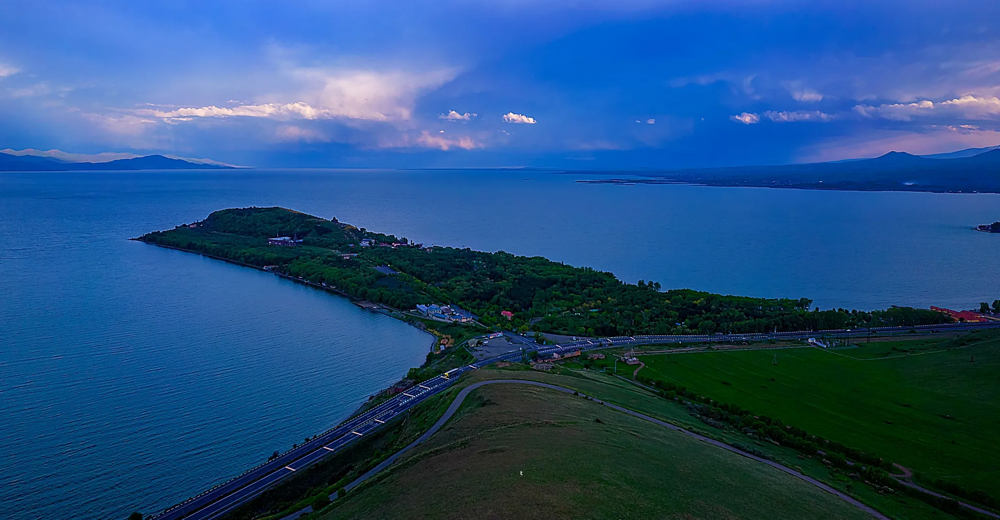
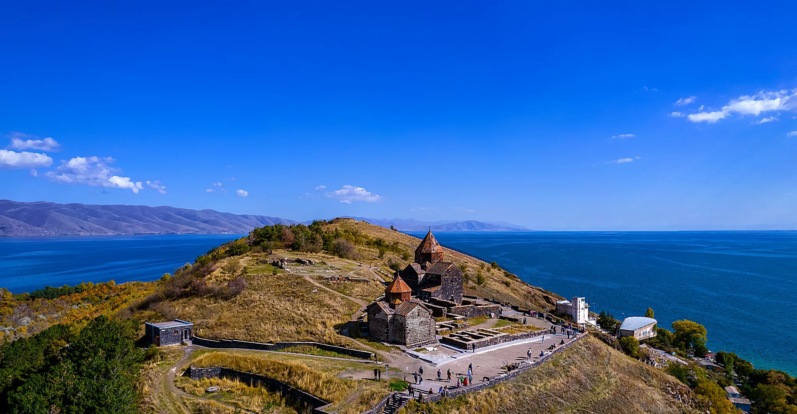
«Սևան» ազգային պարկ
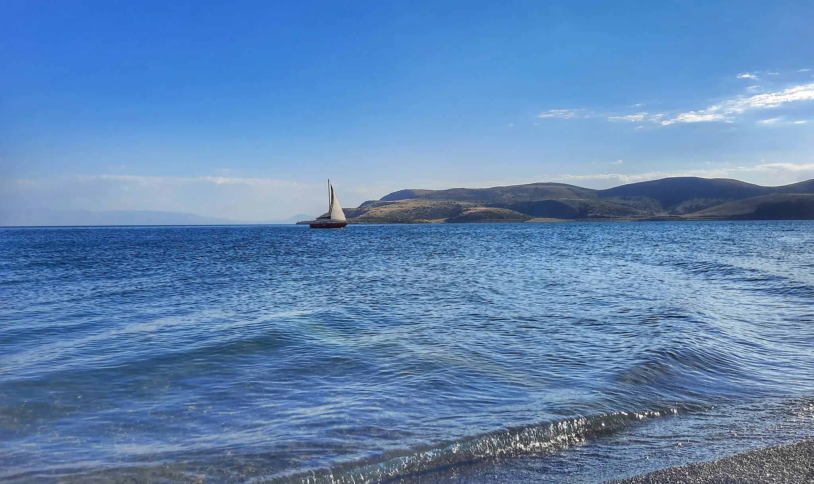
1978 թվականին Սևանա լճի տարածքում հիմնադրվեց «Սևան» ազգային պարկը՝ լճի և նրա էկոհամակարգի պահպանության նպատակով։ Պարկի տարածքը կազմում է շուրջ 4850 քառ.կմ և ընդգրկում է 1898-3597մ բարձրությունները։ Այն շրջապատված է Արեգունու, Գեղամա, Վարդենիսի, Փամբակի և Սևանի լեռնաշղթաներով։
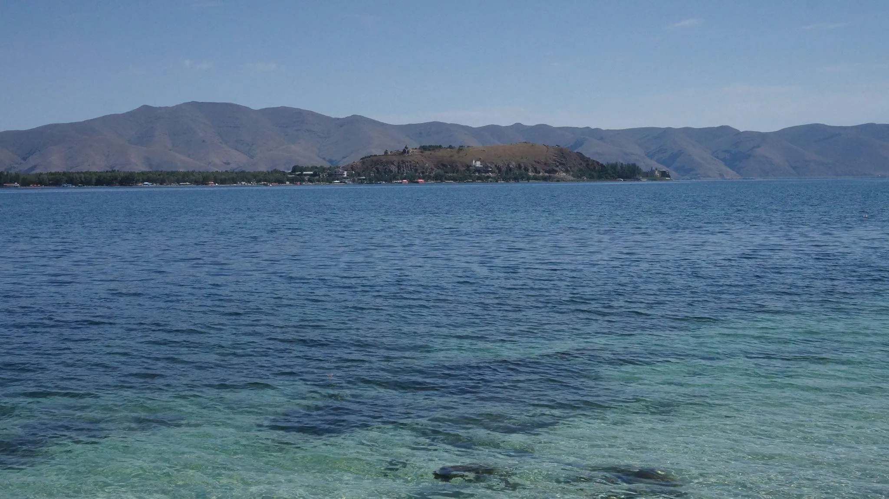
Պարկի տարածքում պահպանվում են շուրջ 1600 բուսատեսակ և 330 կենդանատեսակ։ Ընդհանուր մակերեսից 24.9 հազար հեկտարը առափնյա ցամաքային գոտիներ են։ Ազգային պարկի հիմնական նպատակներն են՝ բնական էկոհամակարգերի և լանդշաֆտների պահպանումը, կենսաբազմազանության վերականգնումը, ինչպես նաև բնական և պատմամշակութային արժեքների նպատակային օգտագործումը։
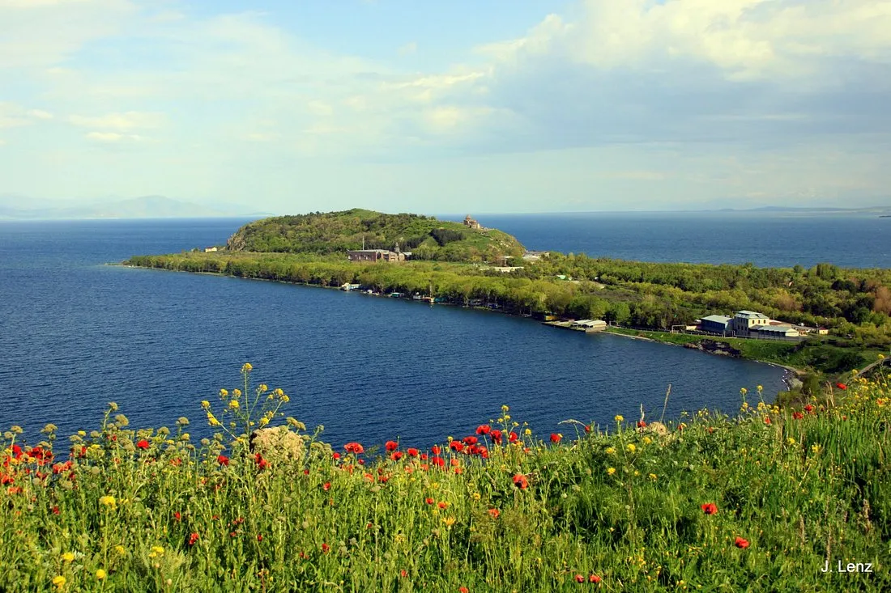
«Սևան» ազգային պարկի տարածքում գործում են Արտանիշի, Գիլլի, Լիճք-Արգիճի և Նորաշենի արգելոցները, ինչպես նաև Գավառագետի և Գիհի-կաղնուտային արգելավայրերը։ Այստեղ ձևավորված են նաև 8 ռեկրեացիոն գոտիներ։
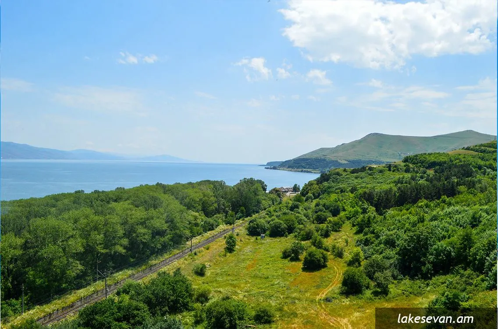
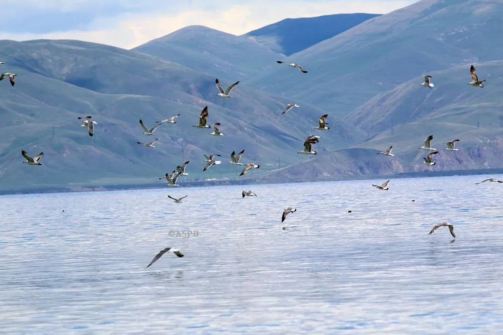
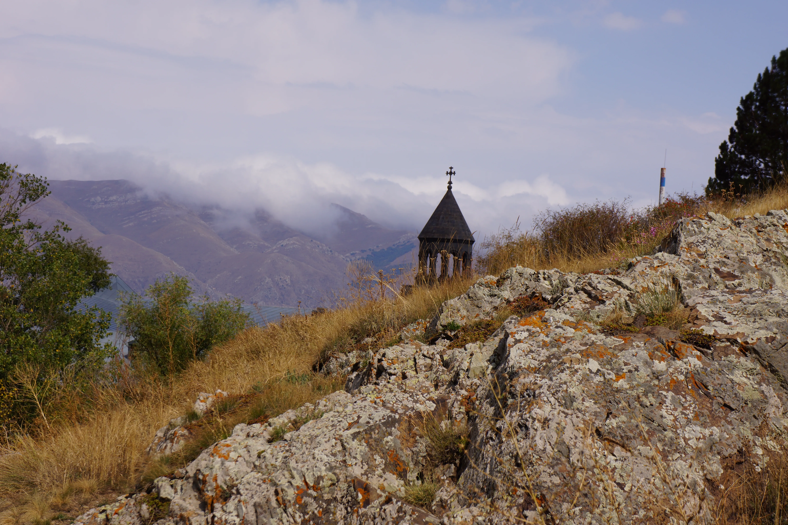
Մարզի տարածքը լեռնային է և բնորոշվում է լանդշաֆտների ուղղաձիգ գոտիականությամբ։
Հարավային և արևմտյան հատվածներում տարածված են բերրի սևահողերը և գետահովտային հողերը։ Հյուսիսային և հյուսիս-արևելյան շրջաններում գերակշռում են մարգագետնատափաստանային, անտառային դարչնագույն և գորշ հողերը։ Սևանի հարավային ու արևմտյան առափնյա գոտիներում տարածված են լեռնատափաստանային սևահողերը, իսկ ավելի բարձրադիր շրջաններում՝ լեռնամարգագետնային հողերը։
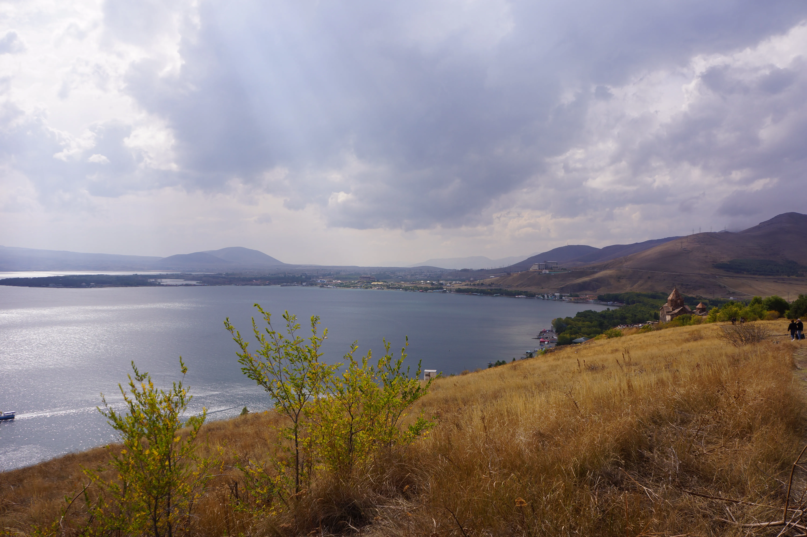